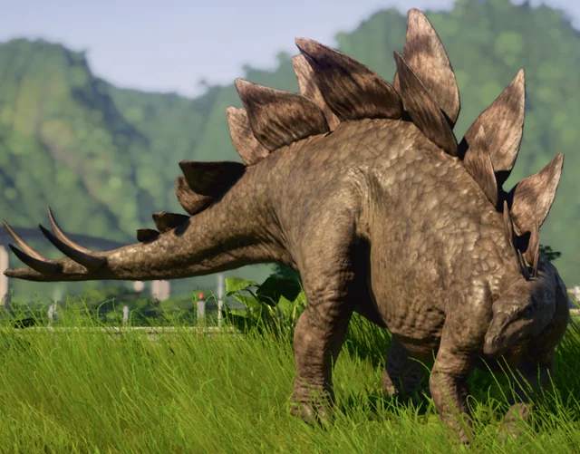

Cos'era lo Stegosauro?
Lo Stegosaurus era un dinosauro erbivoro appartenente agli stegosauri, un gruppo caratterizzato da placche ossee sul dorso e coda armata. Visse nel Giurassico superiore.

Lo Stegosaurus era un dinosauro erbivoro appartenente agli stegosauri, un gruppo caratterizzato da placche ossee sul dorso e coda armata. Visse nel Giurassico superiore.
Era lungo circa 9 metri, con:
Si nutriva soprattutto di animali acquatici come:
Viveva nell'attuale territorio degli Stati Uniti.